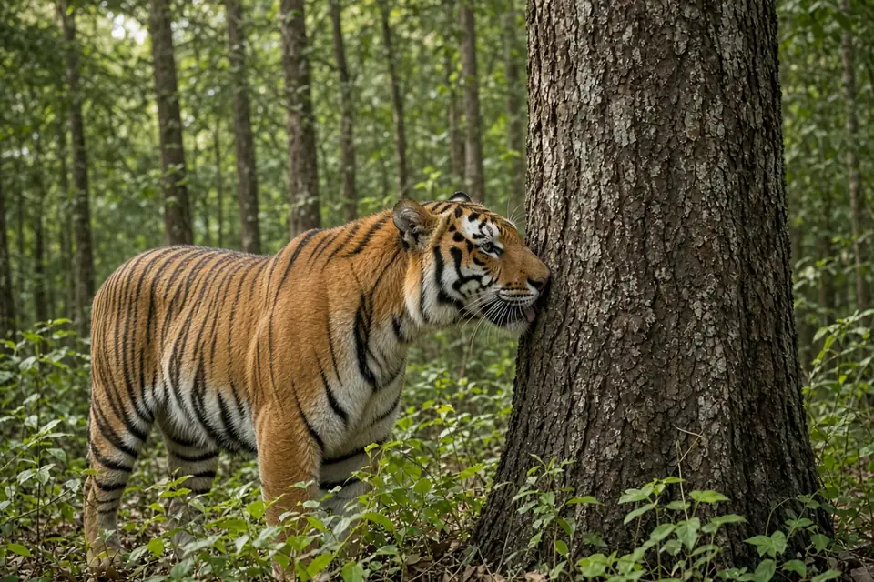

Home › Blog › How big is a tiger's territory?
How big is a tiger's territory? From 12 to over 1,000 km²
A tiger's territory can be as small as about 12 to 14 km² or bigger than 1,000 km², depending mainly on how much prey is around. Radio collar studies found female tigers using about 12 to 14 km² in the Bangladesh Sundarbans, about 70 to 84 km² in western Thailand and about 390 km² in the Russian Far East, where males averaged about 1,385 km². Males' ranges are several times larger than females', and both sexes keep largely separate territories.
The short answer
| Study area | Female home range | Male home range | Study |
|---|---|---|---|
| Sundarbans mangroves, Bangladesh | About 12 to 14 km² (2 females) | Not measured | Barlow et al. 2011 |
| Huai Kha Khaeng, Thailand | About 70 to 84 km² (7 females) | About 267 to 294 km² (4 males) | Simcharoen et al. 2014 |
| Sikhote-Alin, Russian Far East | About 390 km² (14 females) | About 1,385 km² (5 males) | Goodrich et al. 2010 |
Figures are study means. Researchers used different methods (minimum convex polygons or kernel estimates), so the ranges in each row reflect the method used, and small samples mean individual tigers can differ a lot.
Territory or home range?
A home range is the whole area an animal uses for its everyday life: hunting, resting and raising young. A territory is an area an animal defends or keeps for itself. For tigers the two are close to the same thing, because adult tigers are solitary and neighbours of the same sex barely overlap. In the Russian study, the average overlap between neighbouring females was only about 0.11, and between neighbouring males about 0.14, on a scale where 1 would mean sharing the same ground completely. In Thailand, the researchers found that territories of both males and females had little overlap, which indicated that both sexes were territorial. For the basics of tiger life, see our tiger facts.

The biggest territories: Amur tigers in Russia
The largest home ranges come from the cold forests of the Russian Far East. J. Marc Goodrich, Dale Miquelle and colleagues followed radio collared Amur tigers on the Sikhote-Alin Biosphere Zapovednik from 1992 to 2006 and published the results in the Journal of Mammalogy in 2010.
Resident females used home ranges averaging about 390 km² (20 home ranges of 14 females), while males averaged about 1,385 km² (6 home ranges of 5 males). The difference between the sexes was statistically significant.
The study also tracked what young tigers did when they grew up. All seven radio collared male cubs left their mother's home range, but only two of six female cubs did. Daughters tended to settle next to, or inside part of, their mother's range.
Mid sized territories: tigers in Thailand
In Huai Kha Khaeng Wildlife Sanctuary in western Thailand, Achara Simcharoen and colleagues fitted GPS collars to 11 tigers, four males and seven females, and reported the results in Oryx in 2014. Male home ranges averaged 267 to 294 km² and female ranges averaged 70 to 84 km², depending on the method. That is roughly a fifth of the Russian female figure.
The smallest: tigers in mangrove forest
In the Bangladesh Sundarbans, the world's largest mangrove forest, Adam Barlow and colleagues collared two adult females and published preliminary results in Oryx in 2011. Their home ranges averaged only 12.3 to 14.2 km². The authors calculated that a range of about 14.2 km² would mean roughly seven adult females per 100 km² in that part of the forest. Even in this small range, one tiger moved up to 11.3 km in a single day. The authors cautioned that the estimates are preliminary, based on just two tigers, but said they point to good quality tiger habitat in the Sundarbans.
Why the size varies so much: prey
The main driver is food. When the Thailand team compared female home range size and prey abundance at six locations in Thailand and at sites in India, Nepal, Bangladesh and Russia, they found a significant negative correlation: the more prey an area had, the smaller the female tigers' home ranges. A female needs a range big enough to feed herself and her cubs, so where prey is thin, she has to cover far more ground. The IUCN Cat Specialist Group estimates that a tiger needs around 50 to 60 large prey animals a year, which helps explain why prey poor forests demand such huge ranges.
Males range more widely than females. A male's range often overlaps those of one to three females.
Why territory size matters for conservation
Territory size sets how many tigers a reserve can hold. A reserve that could support many females in rich mangrove or lowland forest might hold only a handful in the Russian Far East. That is why the Thailand authors suggested that monitoring prey abundance and home range size can give managers practical targets for tiger conservation.
The Russian study found a second link. When human caused deaths were low, females survived long enough to split their home range with their daughters, which produced smaller home ranges and a higher density of breeding females. When human caused deaths were high, females often died before they could hand over part of their range, and tiger density stayed well below what the habitat could support. The authors concluded that the effects of poaching reach beyond the animals killed, and that reserves must be well protected if they are to act as source populations for nearby unprotected forest. For more on threats and recovery, see big cat conservation and how many big cats are left.
Key takeaways
- Tiger territories range from about 12 km² in the Sundarbans to more than 1,000 km² for males in Russia.
- Male ranges are several times larger than female ranges.
- Neighbouring tigers of the same sex barely overlap, so tigers are territorial.
- More prey means smaller female home ranges, and poaching keeps tiger density below what the habitat could support.
Frequently asked questions
How big is a tiger's territory?
It depends on prey. Radio collar studies found female home ranges averaging about 12 to 14 km² in the Bangladesh Sundarbans, about 70 to 84 km² in western Thailand and about 390 km² in the Russian Far East, where males averaged about 1,385 km².
Do male tigers have bigger territories than females?
Yes. In Thailand male ranges averaged 267 to 294 km² against 70 to 84 km² for females, and in Russia males averaged about 1,385 km² against about 390 km² for females.
Why do tiger territories vary so much in size?
Mainly because of prey. A 2014 study comparing sites in Thailand, India, Nepal, Bangladesh and Russia found that female home ranges were smaller where prey was more abundant.
Do tigers share territory?
Very little. Neighbouring tigers of the same sex had only slight overlap in Russia and Thailand. Young females often settle next to or within part of their mother's range, while young males leave.
Cite this page
APA: BigCatWise. (2026, October 11). How big is a tiger's territory?. https://bigcatwise.com/blog/how-big-is-a-tigers-territory.html
MLA: "How big is a tiger's territory?." BigCatWise, 11 Oct. 2026, bigcatwise.com/blog/how-big-is-a-tigers-territory.html.
Chicago: BigCatWise. "How big is a tiger's territory?." Last modified October 11, 2026. https://bigcatwise.com/blog/how-big-is-a-tigers-territory.html.
Please check the date you accessed the page and adjust to your teacher's or journal's style guide.
Sources
- Goodrich, Miquelle, Smirnov, Kerley, Quigley and Hornocker (2010) Spatial structure of Amur (Siberian) tigers on Sikhote-Alin Biosphere Zapovednik, Russia, Journal of Mammalogy 91(3): 737-748. DOI 10.1644/09-MAMM-A-293.1
- Simcharoen, Savini, Gale, Simcharoen, Duangchantrasiri, Pakpien and Smith (2014) Female tiger Panthera tigris home range size and prey abundance: important metrics for management, Oryx 48(3): 370-377. DOI 10.1017/S0030605312001408
- Barlow, Smith, Ahmad, Hossain, Rahman and Howlader (2011) Female tiger Panthera tigris home range size in the Bangladesh Sundarbans, Oryx 45(1): 125-128. DOI 10.1017/S0030605310001456
- IUCN SSC Cat Specialist Group: Tiger
Figures are rounded summaries of the sources above. Wild populations are hard to count, so estimates change as new surveys are published.